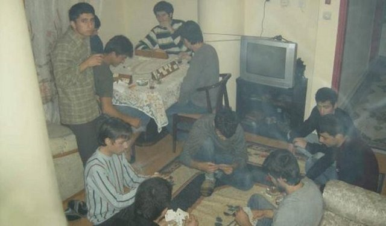
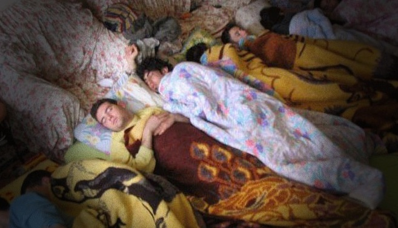

Bursa Emniyet Müdürlüğü’nün şehrin farklı noktalarındaki 25 öğrenci evine yapılan eş zamanlı operasyonda toplam 30 koli makarna, tonlarca kaçak çay, tonlarca sigara paketleri ele geçirildi. Yapılan operasyonla Görükle Ve Yıldırım olmak üzere Bursa’nın farklı semtlerinde önceden belirlenen adreslere baskınlar gerçekleştiren Bursa Emniyet Müdürlüğü Organize Suçlar Şubesi'ne bağlı ekipler, toplam 110 üniversite öğrenicisini saklandıkları öğrenci evlerinde ele geçirirken, son anda kaçmayı başaran 30 öğrenci içinse arama çalışmaları sürüyor.

Evlerde inceleme yapan görevlilerden Ahmet Işık: “Evler pislik içinde, mutfakta küflenmiş makarna, yumurta.. Hangi evi bassak ev çorap, küf kokusundan girilmiyor, koltuklar sigara küllerinden dolayı delik teşik… Bir öğrenci evinde 35 kişinin aynı evde yaşadıkları da gözden kaçmadı… 35 kişinin kaldığı evde yaşayan A.K. “Normalde 5 kişi kalıyoruz akşam yatıyorum sabah bi kalkıyorum evde tanımadığım bir ton insan, yanımdakilere soruyorum bunlar kim diye ? Onlarda bilmiyor…”